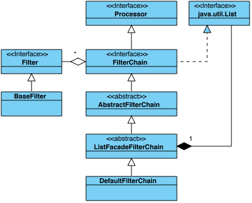

FilterChains and Filters
In the previous sections we mentioned the Processor, and its role - processing I/O events occurred on Grizzly *Connection*s. The FilterChain is the most useful type of Processor used in Grizzly.

FilterChain, according to its name, is a chain of *Filter*s. Each Filter represents a unit of processing work to be performed, whose purpose is to examine and/or modify the state of the transaction that is represented by a FilterChainContext.
To give an idea how FilterChain may look like, here is example of FilterChain, which implements HTTP server logic:

-
TransportFilter is responsible to read data from network Connection to a Buffer, and to write data from Buffer to a nework Connection
-
HttpFilter is responsible for Buffer <-> HttpPacket transformation (both directions)
-
HttpServerFilter is responsible for processing request *HttpPacket*s and generating response *HttpPacket*s and send them back on FilterChain in opposite direction (HttpServerFilter->HttpFilter->TransportFilter).
So, what if we want to implement HTTPS server? It’s simple:

we add just one SSLFilter, responsible for encoding/decoding SSL secured data.
As we see, during the processing of any I/O Event, Filters in a FilterChain will be executed in the certain order. It’s important to remember that the most of I/O Events are processed starting from first filter to last (from left to right on the schema above), except WRITE event, whose processing starts from last Filter in chain to first (from right to left a the schema above).
Let’s define some terminology to make the following descriptions clearer:
-
Upstream - direction from this Filter to the last Filter in chain (from left to right on the schema above);
-
Downstream - direction from this Filter to the first Filter in chain (from right to left on the schema above);
Let’s take a look which I/O events could be processed by a FilterChain, for that purpose we can just take a look at the Filter interface methods:
public NextAction handleRead(FilterChainContext ctx) throws IOException; public NextAction handleWrite(FilterChainContext ctx) throws IOException; public NextAction handleConnect(FilterChainContext ctx) throws IOException; public NextAction handleAccept(FilterChainContext ctx) throws IOException; public NextAction handleClose(FilterChainContext ctx) throws IOException;
so I/O events are
-
READ: data is available from a Connection, which could be read and processed;
-
WRITE: data is going to be written to a Connection and the Filter might be responsible to transform data representation form, like HttpPacket -> Buffer on schema above;
-
CONNECT: new client Connection has been connected;
-
ACCEPT (TCP only): new client Connection has been accepted by server Connection (TCPNIOServerConnection);
-
CLOSE: the Connection has been closed (either locally or by peer);
It’s important to remember that the same I/O events on the specific Connection are processed serially. For example, if we process READ I/O event on Connection “A”, Grizzly will never start processing another READ I/O event on the same Connection “A” until the processing of the previous READ I/O event has completed processing. If the user decides to take ownership of I/O event processing, then the “rule” of serial event processing should still be observed.
Additionally FilterChain Filters are able to initiate and handle custom event notifications. The event initiator may choose to emit the event upstream or downstream by FilterChain like:
public NextAction handleRead(FilterChainContext ctx) throws IOException {
// Here we decide to notify downstream Filters
ctx.notifyDownstream(new OneEvent(...));
// Notify upstream Filters
ctx.notifyUpstream(new AnotherEvent(...));
}
The Filters in FilterChain are able to intercept and process custom Events by implementing method:
public NextAction handleEvent(FilterChainContext ctx, FilterChainEvent event) throws IOException;
As we see each Filter “handle” method has FilterChainContext parameter and returns NextAction result.
FilterChainContext

FilterChainContext represents a context (state), associated with processing of specific I/O event on the specific Connection, so its lifecycle is bound to the processing of a single I/O event.
FilterChainContext contains following state information:
Connection
The Connection I/O event occurred on;
Address
The peer address. In most cases it returns the same value as Connection.getPeerAddress(), except in the case when we handle a READ event on unbound UDP Connection. In this case, the FilterChainContext.getAddress() will return the address of peer, which sent data;
Message
The message being processed. This is the only value Filters may change during the I/O event processing. Usually it is used during the incoming/outgoing message parsing/serializing. Each Filter is able to take initial message data, transform it to a different representation, set it back and pass processing to the next Filter in chain.
For example, when handling READ event, HttpFilter gets message from FilterChainContext as Grizzly Buffer, transforms it to a HttpPacket, sets HttpPacket back to FilterChainContext message and passes control to a HttpServerFilter, which will get HttpPacket from the FilterChainContext and process it.
In addition to holding the state, the FilterChainContext provides support for commonly used I/O operations:
Read
ReadResult readResult = ctx.read();
This operation performs a blocking FilterChain read starting at the first Filter in chain (inclusive) upstream to this Filter (exclusive).
The operation will return a result, when processing of READ I/O event will reach the current Filter and FilterChain will be about to call handleRead(…) operation of this Filter.
Write
ctx.write(message);
or
ctx.write(message, completionHandler);
or
ctx.write(address, message, completionHandler); // Unbound UDP only
This operation performs a non-blocking FilterChain write starting at this Filter (exclusive) downstream to the first Filter (inclusive). This operation initiates processing of WRITE I/O event on the FilterChain starting from this Filter (exclusive).
Flush
ctx.flush();
or
ctx.flush(completionHandler);
This operation initializes and notifies downstream filters about special TransportFilter.FlushEvent so each Filter is able to handle this event and make sure all the cached data was written on the Connection.
Event notification
ctx.notifyUpstream(event);
or
ctx.notifyDownstream(event);
This operation notifies all the upstream/downstream Filters in the FilterChain about specific FilterChainEvent.
NextAction
As stated previously, during processing of an I/O Event, the FilterChain is calling Filters one by one from first to last except WRITE event, which is being processed from last Filter to first. At the same time Filters can change the default I/O Event processing order by returning different types of NextAction:
StopAction
return ctx.getStopAction();
instructs the FilterChain to stop the processing of this I/O Event. Usually StopAction is returned when there isn’t enough data to continue FilterChain processing, or it’s the last Filter in the chain.
The StopAction could be parameterized:
return ctx.getStopAction(incompleteChunk);
or
return ctx.getStopAction(incompleteChunk, appender);
An incompleteChunk in StopAction means there isn’t enough data to continue FilterChain processing. As more data becomes available but before FilterChain calls the Filter, it will check if the Filter has any data stored after the last invocation. If an incompleteChunk is present it will append the new data to the stored one and pass the result as the FilterChainContext message.
Note: the incompleteChunk should be “appendable”, so the FilterChain will know how new data chunk should be appended to the stored one. So the incompleteChunk should either implement org.glassfish.grizzly.Appendable or org.glassfish.grizzly.Appender should be passed as additional parameter.
InvokeAction
return ctx.getInvokeAction();
instructs the FilterChain to run next Filter in chain according to the natural execution order.
It’s possible to create the InvokeAction with an incompleteChunk parameter:
return ctx.getInvokeAction(incompleteChunk, appender);
this instructs the FilterChain to store the incompleteChunk and continue FilterChain execution like it was with non-parameterized version.
This feature is particularly useful for those cases a message or several messages are parsed from the source Buffer and discover that there is a remainder whose data is not enough to transform to an application message. So the developer can continue the FilterChain processing with the message(s) that were parsed and store the incompleteChunk remainder. As more data becomes available but before FilterChain calls the Filter again, it will check if the Filter has any data stored after the last invocation. If an incompleteChunk is present it will append the new data to the stored one and pass the result as the FilterChainContext message.
Note: the incompleteChunk should be “appendable”, so the FilterChain will know how new data chunk should be appended to the stored one. So the incompleteChunk should either implement org.glassfish.grizzly.Appendable or org.glassfish.grizzly.Appender should be passed as additional parameter.
Another option is to create the InvokeAction with an unparsedChunk parameter:
return ctx.getInvokeAction(unparsedChunk);
this instructs the FilterChain to store the unparsedChunk and continue FilterChain execution like it was with non-parameterized version. Unlike in the “incompleteChunk” case described above, this time we don’t know if unparsedChunk has enough data to transform to application message(s) or not. Once the FilterChain execution completes, the unparsedChunk of the most recent Filter in chain will be restored FilterChain processing will be re-initialed immediately starting from the Filter which stored the unparsedChunk.
This feature is particularly useful for those cases a message is parsed from the source Buffer and discover that the Buffer contains a remainder, which may or may not contain more messages. This allows the developer to extract the first message and save the remainder to be processed after the current message processing has been completed.
RerunFilterAction
return ctx.getRerunFilterAction();
Instructs the FilterChain to re-run this Filter one more time. This can useful to simplify I/O event processing code and avoid recursions.
SuspendAction
return ctx.getSuspendAction();
Instructs the FilterChain to terminate (leave) the I/O event processing in the current thread. The user will be able to resume the I/O event processing by calling
-
ctx.resume(): resumes processing at the same Filter it was suspended.
-
ctx.resume(NextAction): resumes processing at the same Filter it was suspended, but instead of passing control to the Filter - it simulates the Filter processing completion like if it returned NextAction as the result
-
ctx.resumeNext(): resumes processing at the Filter next to the Filter it was suspended at. Same as ctx.resume(ctx.getInvokeAction()).
Please note, after returning SuspendAction and before I/O event processing will be resumed, Grizzly won’t initialize the same I/O event processing on the same Connection. For example if we return the SuspendAction during READ event processing - Grizzly won’t notify the FilterChain about any new data coming on the same Connection, until READ event of the suspended event has been completed.
ForkAction (was SuspendStopAction)
return ctx.getForkAction();
This NextAction is very similar to SuspendAction, except for one important thing. After getting ForkAction, Grizzly will keep listening for the same I/O events on the Connection and notify FilterChain if they occur.
Special care should be taken with this NextAction to ensure that two or more threads are not processing the same I/O operation simultaneously.